Kibana Guide: First Steps in Kibana
|
This content was generated with the assistance of AI and should be verified against the official documentation before being relied on in production. |
Checked on 2026-11-11 against Kibana 9.5.x.
What you build
You start the Kibana profile of the lab, sign in, learn the places you will use in every later guide (the menu, the global search and the space) and install two sample data sets that Kibana ships. Then you open the sample dashboard [Logs] Web Traffic and change what it shows with the time picker and the Refresh button. Nothing you create here is needed later, but the sample data sets give you a first dashboard to look at before you build your own.
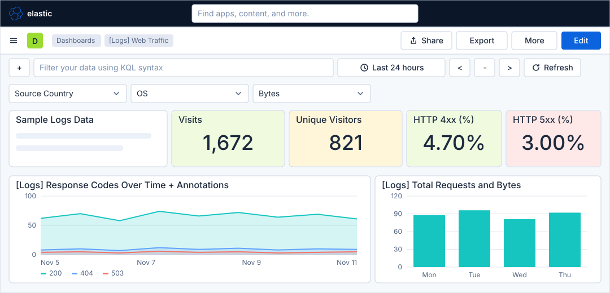
Before you start
-
Docker and Docker Compose are installed, and you have the lab files described in the hands-on lab. This is the first guide of the Kibana series, so there is no earlier guide.
-
The Kibana profile starts Elasticsearch and Kibana 9.5.6, the load generator, the Bookshelf service and the collector that sends its logs and traces to Elasticsearch. Kibana needs about a minute after the start. The sign-in below uses the lab user
elasticwith the passwordlab-elastic-password. -
The lab runs with a trial licence, so every screen of this series is available. This guide itself needs only the basic licence and the privileges of the
elasticuser. -
The figures are drawings of the Kibana 9.5 user interface, not screenshots, so small details can differ from your screen. A highlighted box with a number marks the control of the step with the same number.
Steps
This guide needs no map of its own: the screens are simple, and the later guides come with maps of the areas they use (Discover, the Lens editor, dashboards and the rule form).
Start the lab and sign in
-
Start the Kibana profile and wait about a minute:
cd lab docker compose --profile kibana up -d -
Open http://localhost:5601 in a browser. Kibana shows the sign-in page Welcome to Elastic.
-
Type
elasticin Username. -
Type
lab-elastic-passwordin Password. -
Click Log in.
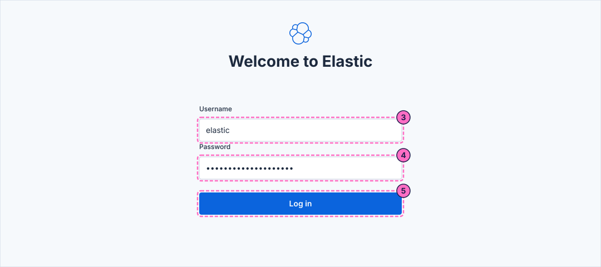
-
The first time you sign in, Kibana opens a full-screen welcome with the card Start by adding integrations. Click Explore on my own. Kibana opens Home, titled Welcome home.
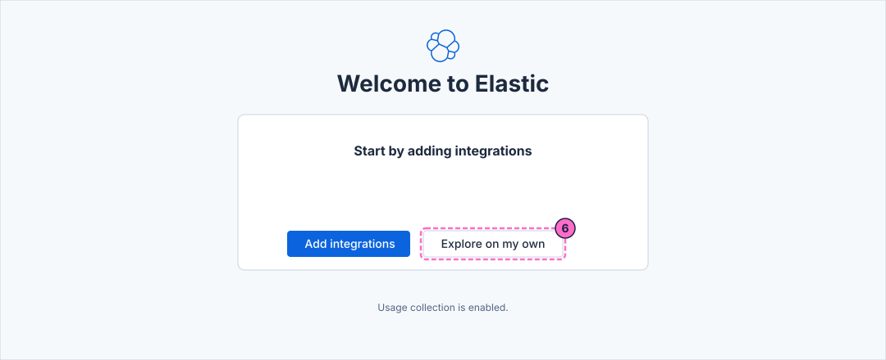
Find your way around
-
Look at the second bar, the white bar under the dark one. Next to the menu button it has a green square with the letter D, the Spaces navigation button. It shows that you work in the Default space, which uses the classic navigation: one menu with all the solutions, as the next steps show. A space can instead be created with a Solution view (Observability, Security or Search), and its navigation then shows only that solution. The lab uses the default space, and you do not change it. The Spaces menu is not opened in this guide.
-
Click the menu button, Toggle primary navigation, at the left of the second bar.
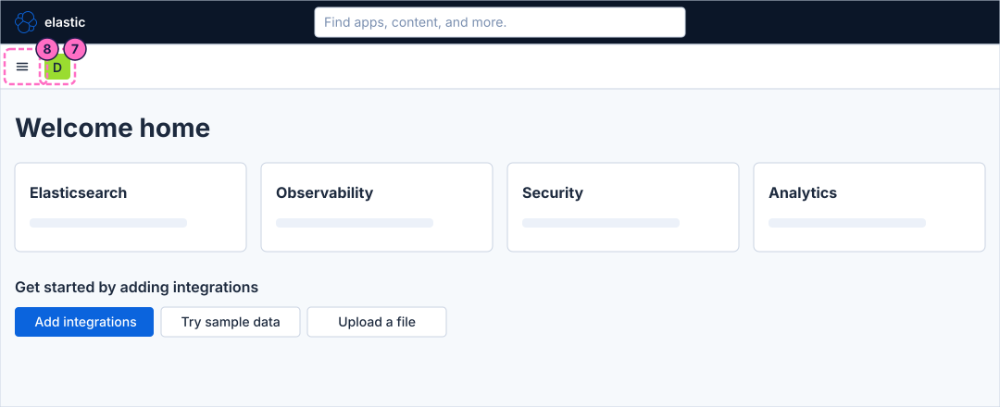
-
Read the list. The section Analytics holds Discover, Dashboards, Maps, Machine Learning, Graph and Visualize library. Below it come the sections Elasticsearch, Observability, Security and Management. The guides of this series use Discover and Dashboards from Analytics, the Observability pages for alerts, and Stack Management under Management.
-
Close the navigation with the X at its top right.
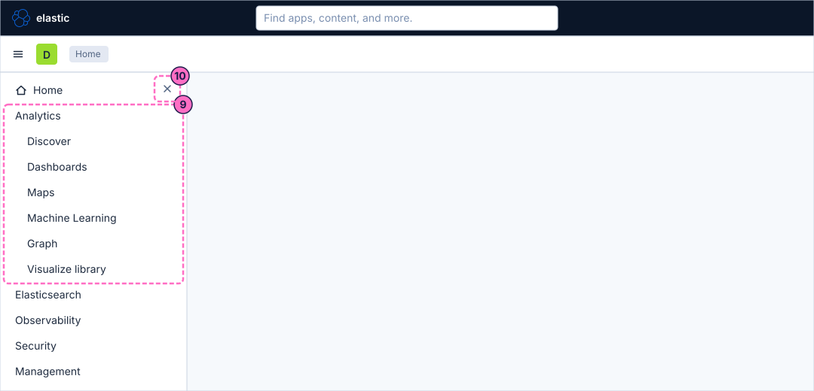
-
Click the global search box in the dark first bar, which says "Find apps, content, and more." You can also reach it from anywhere in Kibana with the keys Ctrl and the slash key (Command and the slash key on macOS).
-
Type
dashboards. A list of matching apps and content opens under the box; choosing one of its rows opens that app or object. This guide does not open any of them.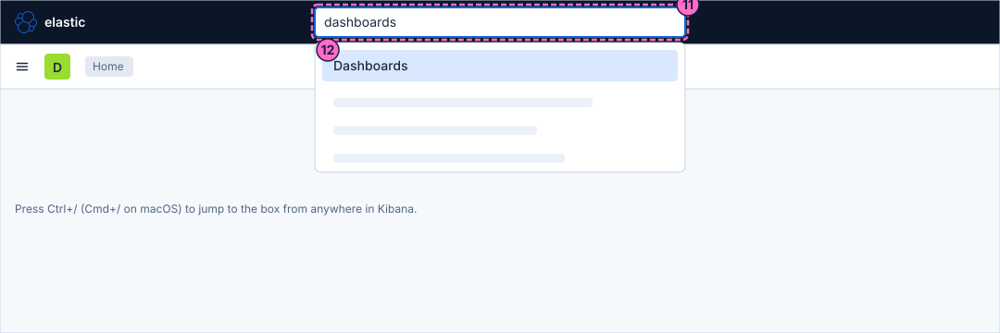
-
Delete the text again, so that the box is empty.
Install the sample data
-
On Home, in the row Get started by adding integrations, click Try sample data. Kibana opens the page Add data on its tab Sample data.
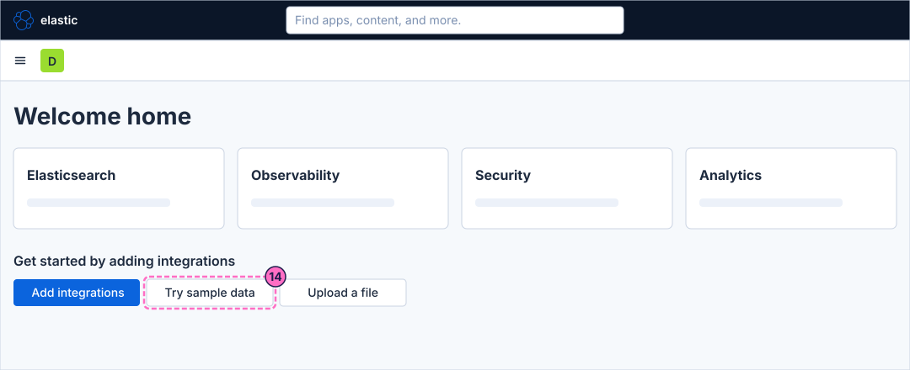
-
On the card Sample web logs, click Install data.
-
Wait 10 to 20 seconds, until the card shows the badge INSTALLED.
-
On the card Sample eCommerce orders, click Install data. The first sample data set you install becomes the default data view of Kibana, so a later guide that needs the data view Bookshelf logs (guides) picks it from the data view list, not from the default.
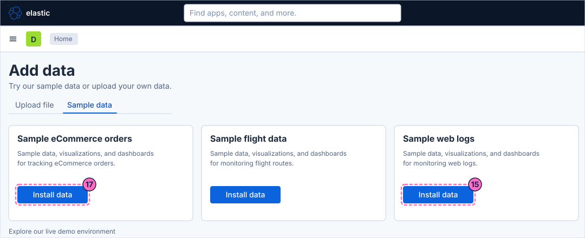
-
Wait again, and check that both cards show the badge INSTALLED, with the buttons Remove and View data. Leave Sample flight data alone.
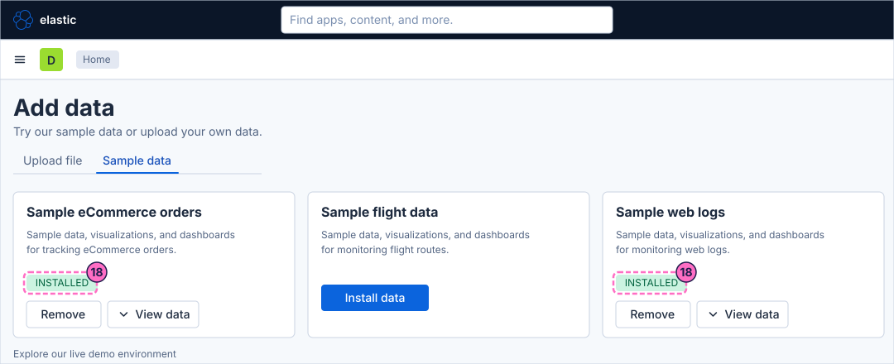
Open a sample dashboard
-
On the card Sample web logs, click View data.
-
In the menu, click Dashboard. The other entries are Discover, Map, Agent Builder, Graph and ML jobs.
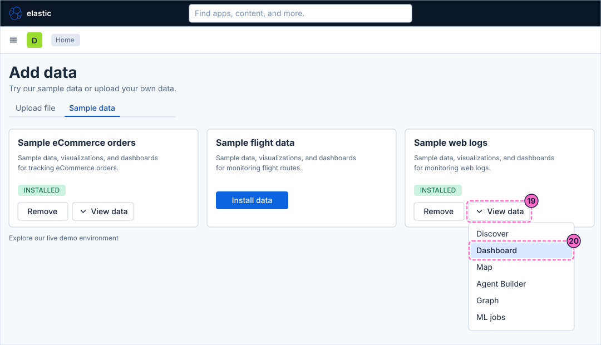
-
Kibana opens the dashboard [Logs] Web Traffic. Check the breadcrumbs of the second bar: they read Dashboards and [Logs] Web Traffic. The page shows the controls Source Country, OS and Bytes, the tiles Visits and Unique Visitors, the tiles HTTP 4xx (%) and HTTP 5xx (%), and the charts of response codes and of requests and bytes.
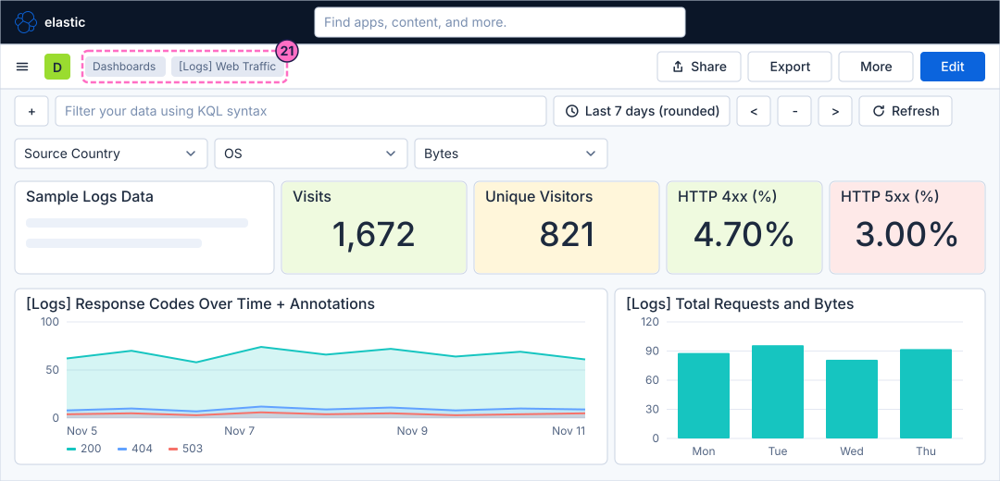
Use the time picker and refresh
-
In the filter row under the second bar, click the time picker, which shows Last 7 days (rounded). The sample data is generated relative to the day you install it, so the last week is the range that holds it.
-
In the list that opens, choose Last 24 hours. The dashboard recalculates every panel for the shorter range, and the picker now shows Last 24 hours.
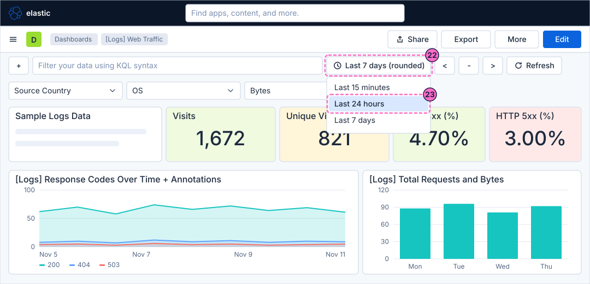
-
Click Previous, the arrow at the right of the time picker. The range moves back by its own length, so the dashboard now shows the 24 hours before the first range. The buttons Zoom out and Next next to it widen the range and move it forward again.
-
Click Refresh. Kibana runs the queries of every panel again with the same range. Use it after new data arrives; the numbers change only when the data does.
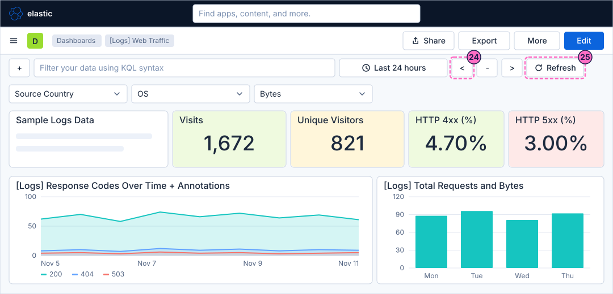
Check the result
The dashboard [Logs] Web Traffic is open and shows numbers in its tiles and charts, and the time picker reads Last 24 hours. Open Dashboards from the menu: the list holds the two sample dashboards. To see that the lab’s own traffic generator is in its default mode, which fills the Bookshelf log data that the next guides explore, ask it for its mode:
curl localhost:8090/It prints the mode, which is normal. If it is not, restore it with curl -X POST localhost:8090/mode/normal.
Variations
-
Click Edit in the second bar to see the dashboard in edit mode. Leave it with Exit edit and do not save, so the sample dashboard stays as installed. The guide on dashboards builds one from scratch.
-
Open View data → Discover on the card Sample web logs to see the same data as a table of documents; the Discover guides of this series do that with the Bookshelf logs.
-
Use the version check
curl -s -u elastic:lab-elastic-password http://localhost:5601/api/status | jq .version.numberif you are not sure which release your lab runs; the series was checked on 9.5.6.
What can go wrong
| Symptom | Cause | Fix |
|---|---|---|
The browser cannot reach http://localhost:5601 or shows that Kibana is not ready |
Kibana needs about a minute after the start, or the profile was started without the |
Wait, then check |
Log in refuses the user |
The password was typed with a typo, or the lab was started with other credentials. |
Type |
There is no Explore on my own button and Home is already open |
You have signed in before in this browser, so the welcome is not shown again. |
Continue with the next step. |
Install data stays busy or the card shows an error |
Elasticsearch is still starting. |
Wait, reload the page and click Install data again. Remove followed by Install data reinstalls a set. |
The dashboard panels say that no results were found |
The time picker covers a range without sample data, for example after Previous was clicked several times. |
Choose Last 7 days in the time picker and click Refresh. |
Clean up
Keep the sample data: you can remove it any time from the page Add data, with the button Remove of each card. It does not interfere with the data views the following guides create. To remove it with everything else the lab stores,
stop the profile with docker compose --profile kibana down -v, which also deletes the volumes.
Where to go next
-
Previous guide: none, this guide starts the series after the hands-on lab.
-
Next guide: Upload a file and create a data view, which uploads a CSV file and creates the data view for the Bookshelf logs.
-
Reference: Installation and configuration explains how Kibana and Elasticsearch are installed and configured, and Architecture and the Elastic Stack shows how Kibana, Elasticsearch and the collectors fit together.